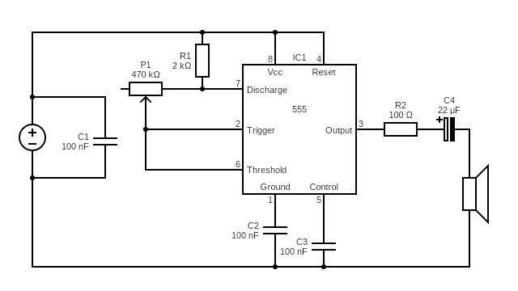

Étape 1 : NE555 + 1 potentiomètre
Construire un VCO manuel (astable) et entendre directement l'effet de RC sur la fréquence.
Cette étape est la base de tout le module. L'idée est de partir d'un montage simple, mais de le comprendre en profondeur : ce que fait chaque composant, ce que vous devez mesurer ou écouter, et comment diagnostiquer rapidement si le circuit ne réagit pas comme prévu.
Lien permanent sécurité
Gardez cette ressource ouverte pendant toute la séance.
Objectif
Monter un NE555 en astable avec un potentiomètre de réglage pour faire varier le pitch en temps réel.
Quand R augmente, la charge du condensateur est plus lente, donc la fréquence diminue.
Concrètement, l'exercice consiste à obtenir un son stable d'abord, puis à faire varier la hauteur de façon contrôlée avec le potentiomètre. Si vous arrivez à entendre clairement que le pitch descend quand la résistance augmente, l'objectif pédagogique est atteint.
Schéma du module 1

Montage breadboard pas à pas
Procédez dans l'ordre, sans brûler d'étapes. Après chaque groupe de connexions, faites une vérification visuelle (broches, rails d'alimentation, polarités) avant de passer à la suite.
- Placez le NE555 au centre de la breadboard (encoche orientée vers le haut).
- Reliez la broche 1 au GND et la broche 8 au VCC.
- Reliez la broche 4 (RESET) au VCC.
- Reliez les broches 2 (TRIG) et 6 (THRESH) ensemble.
- Placez le condensateur de timing entre le nœud 2/6 et GND.
- Placez le potentiomètre dans la chaîne de résistances de timing (RA/RB selon votre schéma).
- Ajoutez un condensateur de 100 nF entre la broche 5 (CONTROL) et GND.
- Ajoutez un découplage 100 nF entre VCC et GND, au plus près du NE555.
- Prenez la sortie sur la broche 3 via une résistance série de 100 Ohm, puis un condensateur de liaison de 22 µF vers le haut-parleur.
Conseil atelier : mettez sous tension seulement quand le câblage est entièrement terminé et revérifié.
Liste des composants
- 1 × NE555
- 1 × potentiomètre P1 : 470 kOhm
- 1 × résistance R1 : 2 kOhm
- 1 × résistance R2 : 100 Ohm (série sortie audio)
- 1 × condensateur C1 : 100 nF
- 1 × condensateur C2 : 100 nF
- 1 × condensateur C3 : 100 nF (broche 5 CONTROL)
- 1 × condensateur C4 : 22 µF (liaison audio)
- 1 × haut-parleur
- 1 × alimentation DC (VCC/GND)
- Breadboard et fils de connexion
Ce qu'il faut comprendre
Pendant l'exercice, gardez ces idées en tête. Elles permettent de lier ce que vous câblez à ce que vous entendez.
- Le condensateur de timing oscille entre deux seuils internes du NE555, environ 1/3 et 2/3 de VCC.
- Chaque franchissement de seuil fait basculer la sortie, ce qui crée une onde carrée.
- La valeur de résistance pilotée par le potentiomètre fixe la vitesse du cycle, donc la fréquence.
- Les condensateurs de découplage et de contrôle améliorent nettement la stabilité du montage.
Quand vous tournez le potentiomètre, vous ne « changez pas un son au hasard » : vous modifiez le temps de charge/décharge du condensateur. C'est exactement cette variation temporelle qui devient une variation de hauteur sonore.
Mini glossaire
Ces termes reviennent souvent pendant l'exercice. Les maîtriser vous aide à lire un schéma plus vite.
- VCC : rail d'alimentation positif du montage.
- GND : référence 0 V commune à tout le circuit.
- Pinout : fonction de chaque broche du NE555 (alimentation, seuil, sortie, contrôle, etc.).
- Astable : oscillateur qui commute en permanence, sans état stable fixe.
- VCO : oscillateur dont la fréquence varie selon un paramètre de commande.
Ici, le paramètre de commande du VCO est principalement le réseau RC autour du NE555.
Erreurs fréquentes
Si le montage ne fonctionne pas du premier coup, commencez par ces points. Ce sont les causes les plus probables.
- Condensateur électrolytique de sortie inversé (polarité non respectée).
- Oubli du condensateur de découplage entre VCC et GND.
- Masse commune absente entre alimentation et sortie audio.
- NE555 mal orienté sur la breadboard (encoche repérée à l'envers).
La bonne méthode de dépannage est de vérifier d'abord l'alimentation et le brochage, puis le réseau RC, puis la sortie audio.